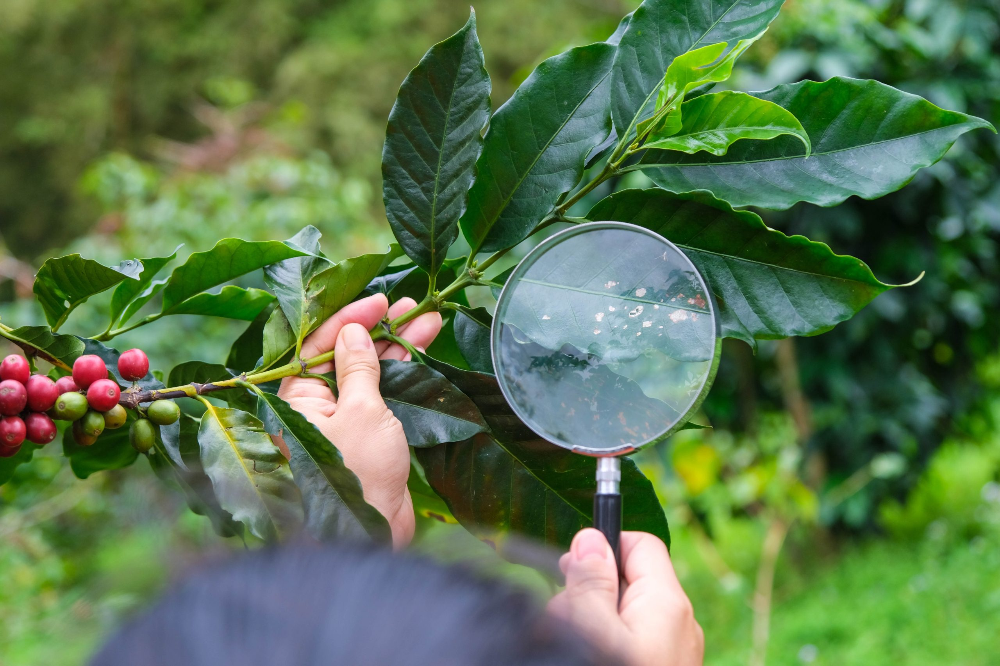

Escolha das mudas -
Determine qual ou quais espécies de café serão plantadas. Para isso, estude muito bem suas particularidades
e necessidades,
levando sempre em conta as características de solo, sol e chuva da sua propriedade. Adquira as plantas de um
vendedor de
qualidade e procedência. Afinal, isso garante mudas saudáveis e produtivas. Este é um dos principais
investimentos que devem
ser feitos, sendo que têm impacto direto em como plantar o café.
Preparo do solo -
Realize uma análise de solo e entenda quais suas características tanto em relação à presença de nutrientes
quanto de textura,
estrutura, pH e drenagem. Ou seja, todas informações importantes para saber como realizar o manejo da
plantação.
Após a análise, faça o preparo do solo: remova vegetação indesejada, faça aração, gradagem, destorroamento e
controle a
erosão. Um solo mal preparado pode tanto prejudicar a produtividade quanto efetivamente inviabilizar a
produção.
Adubação -
Com base na análise do solo, identifique quais os nutrientes já presentes e quais precisarão ser
complementados
na adubação.
De modo geral são feitas adubações antes do plantio, durante o crescimento da planta,
durante a floração e após a colheita. Porém, também é possível fazer a adubação do plantio de café na
fase de maturação dos frutos.
Plantio -
Com o terreno já preparado e adubado, é hora de preparar as covas. A prática mais comum de como plantar café
é com covas de 30 cm de profundidade por 30 cm de largura. Por sua vez, a distância de uma muda para outra é
indicada entre 3 e 4 metros para o plantio manual e 2,5 a 3,5 metros para o plantio mecanizado. Atente-se a
essas
recomendações, pois elas tornarão o processo de manutenção do plantio e sua posterior colheita muito mais
práticos.
Além disso, ficará mais fácil realizar a irrigação e controle de pragas, além de reduzir a quantidade
necessária de podas.
Irrigação
O cafeeiro precisa de 4 a 6 litros de água diariamente para seu crescimento saudável. Ainda assim, vale
apontar que
diferentes espécies e variedades terão necessidades diversas. Similarmente, plantas
jovens e/ou em floração e produção de frutos tendem a precisar de mais água. Portanto,
planeje a irrigação de forma adequada ao momento da sua plantação.
Controle de pragas e doenças
Monitore regularmente a lavoura inteira para identificar pragas e doenças antes que elas se
alastrem.
Aliás, confira todas as partes das plantas, das raízes até as folhas.
O uso de químicos pode ou não ser necessário. Se for, atente-se para a qualidade dos
produtos em
questão e para sua utilização correta. Desse modo, protege-se a plantação de café e também o
meio ambiente.
|

|
Colheita
a produção do café, a colheita normalmente é realizada nos meses de maio a agosto, quando os frutos
estão maduros. No Brasil, os três tipos de coleta mais comuns são de derriça, manual e a chamada
“colheita mecanizada de café”. No primeiro modelo, são colocados plásticos embaixo das plantas
para que, quando o grão for apanhado, ele não caia diretamente no chão.
Já a colheita manual do café requer uma grande mão de obra, sendo um método caro e demorado.
Os coletores precisam selecionar os grãos maduros, caracterizados pela cor avermelhada. Já na
forma mecanizada, esse trabalho é realizado por máquinas que reúnem os grãos em sacas de café.
Processamento
É a etapa seguinte da colheita do café. Depois de transferido para a fábrica, o grão mais
brasileiro é, em um primeiro momento, lavado e separado das pequenas impurezas do campo,
tais como pedaços de galhos, folhas, pedras e terra. Depois disso, para garantir que
apenas os grãos maduros passem para a próxima etapa de produção, existe uma seleção do
fruto. Essa triagem é feita de uma maneira bem simples: todos os frutos são colocados
em água; aqueles que boiam, estão perfeitos; já os que afundam, ainda estão verdes.
Em seguida, é realizado o despolpamento, ou seja, em máquinas específicas são retiradas as
cascas e as polpas, deixando o fruto pronto para uma fermentação que resultará em uma semente
ideal para a secagem.
A secagem é feita em terreiros, o que pode demorar até três dias para atingir o resultado
ideal, ou em máquinas de secagem, que atingem temperaturas de 140º C a 12,5% de umidade,
fazendo com que o fruto saia praticamente seco. É depois da secagem do café que o grão fica
pronto para a torra.
torrefação
O procedimento da torrefação é pirolítico, ou seja, induzido pelo calor. É com temperaturas superiores a
140º C que a química acontece, e as proteínas, gorduras e os açúcares presentes no pretão
interagem e o transformam. Essa é uma etapa importante na qualidade do produto.
O grão, no processo de torração, conta com cerca de 800 moléculas diferentes que,
quando modificadas pelo calor, irão dar as notas de aromas e sabores.